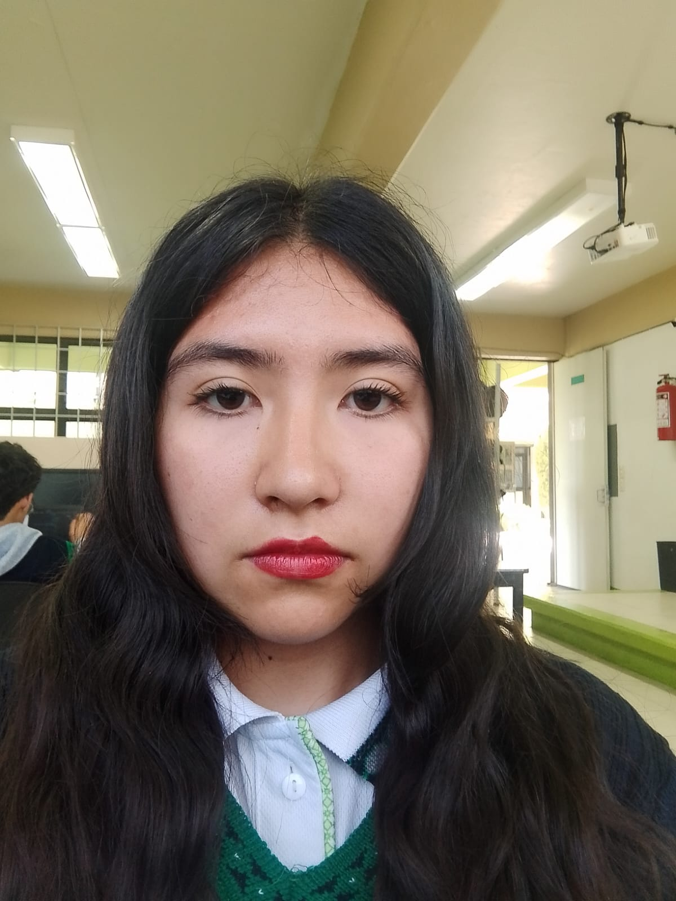

Soy Regina Kristen Ruiz Chávez y nací el 2 de abril de 2009
en Ecatepec, curiosamente el día que se conmemora a los muertos
de la guerra de las Malvinas. Siempre he vivido en mi hermoso
pueblito, San Pedro Pozohuacán. Desde muy pequeña me gustaron
los animales. Entre ellos puedo destacar que a los 3 años me
regalaron una rana, a los 4 un conejo llamado Tambor y a los 5
una perrita llamada Perla. A lo largo de mi infancia tuve otros
cinco conejos, tres cuyos, un perico, dos hámsteres, cuatro
perros y, a los 10 años, mi mascota favorita: un ajolote.
Las cosas más importantes de mi infancia fueron que practiqué muchas actividades extracurriculares y deportes. De los 4 a los 7 años practiqué natación y danza hawaiana, y participé en algunos concursos. También tomé clases de música de los 7 a los 11 años y practiqué boxeo de los 7 a los 10. Otra de las cosas más bonitas que me pasaron fue que a los 10 años fui princesa de la primavera e hice mi comunión con un vestido muy bonito.
En mi adolescencia no la pasé muy bien porque hubo una pandemia y ya no podía ver a la mayoría de mis amigos. En segundo de secundaria me cambiaron de la secundaria 103 de Tecámac a la Sor Juana Inés de la Cruz de mi pueblo. En mis dos secundarias recibí reconocimientos. A los 14 y 15 años fui jefa de grupo y también formé parte de la escolta. Obtuve el segundo mejor promedio al salir. Actualmente estudio en el CECyTEM, en la carrera técnica de programación. Soy una estudiante promedio y me casé legítimamente con mi hermosa esposa Zoe.